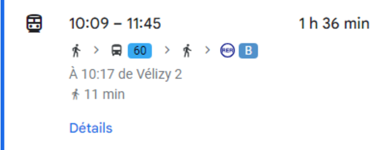
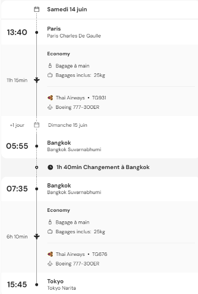

Jour 1 : Départ et Installation à Tokyo
Programme de la Journée
- Départ de France
- Vol international
- Arrivée à Tokyo
- Installation à l'hôtel
- Convertion monnaie actuelle en Yen (1€ = 160¥)
Déroulé de la journée
- Départ de l'IUT à 10h le Samedi 14 Juin 2025 :
- Arrivé à l'aéroport Paris-Charles de Gaulle :
- Passage de la douane :
- Attente jusqu'à 13h40 :
Prise de transport en commun
coût : 180€
Mange sur place
coût : 120€ (8€/pers)

Conversion Euros en Yen Japonais(voir dépense total)
13h40 : Monter dans l'avion et départ
Dépense Total
Dépense prévu avant le jour 1 :
- Avions : 11328,75€ (755,25€ / personne)
- Cartes SIM : 343,5€ (pour 15 personnes)
- Hotel : 387 349¥ (~2 468,84€) (détails Jour 2)
- Adaptateur_Japon : 150€ (1/personne)
- Argent de poche : 1 500€ (100€/personnes)
- marge en cas de problème : 1000€
- Assurance voyage : 312,80 € (20,85 €/personnes)
Total : 17 103,89€
Dépense jour 1 :
- Transport : 186€
- Nourriture : 120€
- Conversion : € en ¥ (1€ ~= 160¥)
Total : 306€
- Total dépense : 17 409,89€
- Budget restant : 2 814 417,6¥ (~17 590,11€)